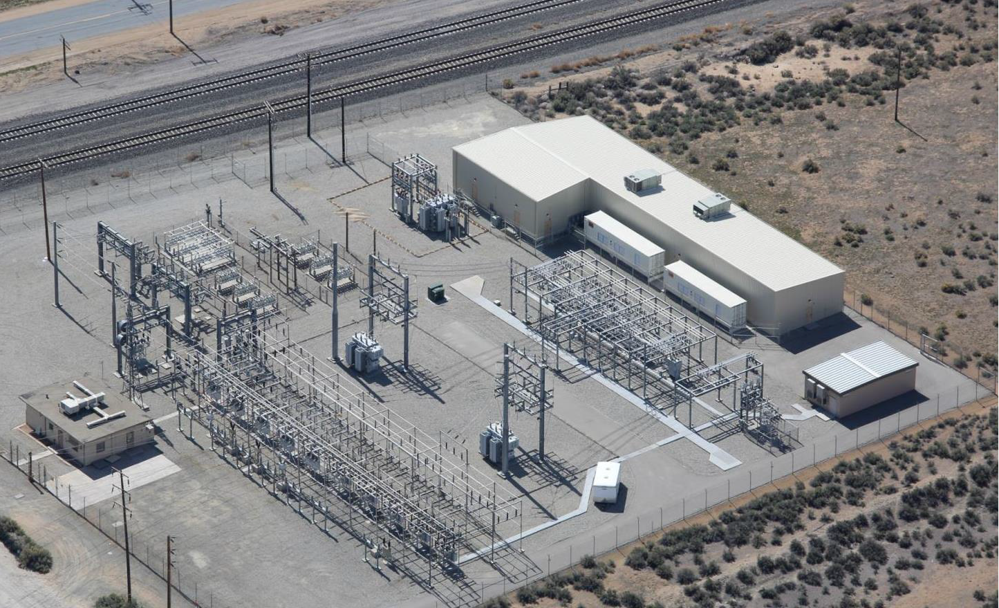

A unique combination of capabilities
The model brings together the core inputs needed to shape credible energy-transition investments and partnerships.
Wasseren leads and supports investments in energy storage and renewable power assets, while enabling market entry, scale-up and commercialisation of next-generation energy technologies and products.
Wasseren Energy combines development, finance, industrial transition, technology commercialisation and public-sector engagement so opportunities can move from strategy into deployable projects.
The model brings together the core inputs needed to shape credible energy-transition investments and partnerships.
Australia offers significant opportunities in renewables, storage, industrial decarbonisation, technology commercialisation and infrastructure. Wasseren helps bridge the complexity of development, grid access, industrial adoption, research translation and stakeholder alignment by connecting the right capital, partners and delivery pathways.
International investors often see attractive headline opportunities before the real execution risks are visible.
Curated access to late-stage development assets, off-market opportunities, co-investment pathways and credible local developers.
Rapid screening of development maturity, grid viability, commercial positioning, pricing discipline and execution risks.
Structured introductions to proven developers, co-development partners and strategic alliances that match investor objectives.

Wasseren combines practitioner insight, commercial judgement and a curated delivery network. The role is not to produce a generic market report; it is to help investors move from interest to qualified action.
Ongoing local intelligence, regular deal flow, opportunity screening, introductions and market-entry guidance. Retainers may be credited against success fees upon transaction completion.
Transaction structuring, counterparty coordination, negotiation input, deal progression and closing support once an opportunity is actively pursued.
Where relevant, support for JV structures, development partnerships and strategic project alignment with Australian developers or technology partners.
Feasibility framing, grid-pathway review, project maturity assessment, partner validation and commercial risk analysis across renewable energy and storage opportunities.
The process is designed for investors who need trusted Australian market access without building a full local team before the opportunity set is understood.
Identify and frame relevant opportunities across storage, renewable power, industrial decarbonisation and next-generation energy technologies.
Test fit, maturity, grid pathway, commercial logic, counterparty quality and capital alignment before deeper diligence begins.
Shape the engagement model, whether acquisition, joint venture, co-development, market-entry mandate or strategic partnership.
Coordinate counterparties, technical advisers, legal inputs, developers and delivery partners so the opportunity can move toward decision.
Wasseren prioritises sectors where Australian market access, project judgement and partner-chain structuring can materially improve investment quality.

Grid-scale BESS, storage-backed renewable platforms, project screening, connection pathway review and commercial positioning.

Wind, solar and hybrid renewable assets supported by origination, due diligence, development and delivery-side experience.
Hydrogen market studies, heavy-industry low-carbon transition, energy productivity and whole-of-system decarbonisation pathways.

Battery recycling, materials recovery and research-to-industry pathways requiring capital, industrial partners and commercialisation support.
Wasseren and its collaborator network bring experience that investors can diligence: project origination, grid connection, commercial contracts, policy work, research translation and industrial energy projects.
Experience includes 10 GW+ wind pipeline origination, 3 GW battery pipeline origination, 275+ MW BESS, 500+ MW wind, 150 MW solar PV and high-voltage connection work.
Includes a 2.4 GW windfarm JDA with Macquarie Asset Management, project acquisition due diligence, EPC and O&M negotiation, PPA support and lending due diligence.
Led hydrogen technology and business-model work, renewable energy investor market research, energy storage industrialisation support and energy-economy policy projects.
Relevant work spans the University of Adelaide, South Australian Government engagement, IFC / World Bank climate finance evaluation, MIT-Tsinghua collaboration and industrial partners.
Selected capabilities from Wasseren and its collaborators are positioned as investor support, not as a static credentials list.
Storage, hydrogen, renewables, grid connection, thermal energy systems, solar PV engineering and renewable storage modelling.
Research-to-industry translation, energy storage industrialisation, partner-chain structuring and demonstration pathway design.
Origination, site screening, planning approvals, environmental and heritage studies, EPC/O&M contracts and owner-side coordination.
Industrial decarbonisation, energy management systems, GHG footprints, energy-efficiency benchmarking and whole-of-system energy strategy.
For investors, the value is not just information. It is disciplined access, stronger local alignment, fewer weak opportunities consuming time, and a more credible path to transaction execution.
Wasseren is based in Adelaide with national reach across Australian project, investor, developer, research and partnership networks.